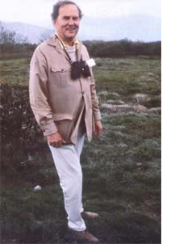

We the people of planet Earth
With respect for the dignity of each human life,
With concern for future generations
With growing appreciation of our relationship to our environment,
With recognition of limits to our resources,
And with need for adequate food, air, water, shelter, health, protection, justice, and self-fulfillment,
hereby declare our interdependence;
And do resolve to work together in peace
And in harmony with our environment
To enhance the quality of life everywhere.
This "Declaration of Interdependence" could not have been written by a chemistry student, a research scientist, an industrial executive, or a politician . . . right? Wrong. Its author, Russell Peterson, has been all of the things listed above, as well as a devoted naturalist . . . an avid bird watcher with more than 1,200 species on his lifetime list . . . an ecological conscience to Presidents and Congress members . . . and (since 1979) the head of the 500,000-strong National Audubon Society. Yet, contradictory though this resume may appear, the 66-year-old chemist/conservationist says he went through a natural evolution from Du Pont research scientist to Delaware governor to national environmental leader.
His efforts to preserve wildlife, halt pollution, and slow population growth have earned Russ Peterson the Gold Medal of the World Wildlife Fund U.S.A., the Conservationist of the Year award from the National Wildlife Federation, and the Audubon award of the National Audubon Society (as well as a whole slewof honorary degrees and fellowships). During the Nixon and Ford Administrations, Peterson chaired the President's Council on Environmental Quality, then-after Jimmy Carter's election-served as director ofthe Congressional Office ofTechnology Assessment. He's been a fixture at almost every international environmental conference since 1970 (the "Declaration of Interdependence" quoted above came from Peterson's speech at last fall's First Biennial Conference on the Fate ofthe Earth) . . . and is now the head ofour country's leading avian organization.
And Russ's birders have grown to be much more than binocular-toting ornithologists in the four years since he assumed the top position of their society. As part of a bold program to oppose the Reagan Administration's environmental policies and to offer positive alternatives to help insure global survival, Peterson has initiated a Citizen Mobilization Campaign and formulated a new set of priorities for the Audubon Society that reach far beyond appreciating and protecting feathered species.
To find out more about the "new" Audubon Society and its president, associate editor Terry Krautwurst met with Peterson twice during the last several months . . . first at the Southeastern Conferenceof Audubon members in Black Mountain, North Carolina, and later in the society's New York headquarters. At the conference, Terry and Russ talked in the early morning hours before joining other Audubon members on a bird walk along the Blue Ridge Parkway. There, Terry reports, a relaxed Peterson conversed easily with his fellow hikers, sharing his companions' delight in every bird and wildflower sighted along the path (yet never overlooking an opportunity to talk seriously with each Auduboner about crucial environmental problems). During the second meeting, several stories tip in a midtown Manhattan office building, MOM's staffer found his soft-spoken subject to be a bit more brisk and businesslike . . . but still characteristically very eager to discuss the ecological issues he deals with every day. "His great enthusiasm and sincere commitment are contagious, " Terry says. "He admits that he feels he's now involved in the most important work he could be doing in his life . . . and it shows!"
PLOWBOY: Mr. Peterson, in the past few years you've earned a reputation as one of this country's leading environmentalists . . . yet after earning a Ph.D. in chemistry at the University of Wisconsin, you devoted 26 years to developing new products for a large chemical company, then served four years as the Republican governor of an industrial state. Forgive me for saying so, but that sounds more like a background of an exploiter of natural resources! Did some kind of mid-career turnaround bring you to the activities you're involved in today?
PETERSON: Actually, I arrived at my present vocation in a more evolutionary way. True, at the beginning of my career, I was all wrapped up in scientific research that did not have an ecological focus. As a member of Du Pont's development team in Delaware, I was responsible for helping to lead that company into new fields, through research and test marketing. For instance, I was closely involved in the development of synthetic fibers and headed the research effort that came up with Dacron polyester.
During my spare time, though, I was quite often involved in social and community-action committees. I organized several thousand people-with the help of the Citizens' Crime Commission-into the Three-S Citizens' Campaign to push through some major laws for reform of the Delaware state prison system. I also worked with the Greater Wilmington Development Council in a neighborhood improvement program to provide better housing, jobs, and health care in low-income areas of the city.
PLOWBOY: How did those activities lead you into politics . . . and the Delaware governor's race in 1968?
PETERSON: Even though I had become known in the state as something of a citizen activist, I still thought of myself primarily as a scientist. I didn't want to get involved in politics! But eventually I realized that I could do even more about those problems that concerned me if I held a public office. So, on the advice of friends, I ran for governor, won, and took ofce in 1969.
PLOWBOY: During your four-year term, you accomplished some pretty earthshaking advances on environmental issues in Delaware. Is that when your interest in ecology began?
PETERSON: No, my interest and concern in that area had started long before . . . about 30 years ago. My son was an avid bird lover (he used to go out before sunrise, just to hear which species sang first!), and he introduced me to bird watching. On our first Audubon sponsored birding trip together-into the Florida Everglades-we saw more than 70 species! After that, I began to go out on weekend bird-watching expeditions along the mid-Atlantic coast with my co-workers from Du Pont. On those outings, I really began to observe the natural world, and I saw what damage can be done to it in only a short time. If, for example, you go out one year into a lovely wetland area that's teeming with wildlife, and return the next to find the same spot occupied by a housing development, the harm that humans can do can't fail to register in your mind. So actually, the birds taught me to be an environmentalist! Because of what I learned on those birding trips, I began to read more and more about environmental science . . . and I became deeply concerned about what was happening to our planet's fragile ecosystem.
When I became governor of Delaware, then, I made saving the state's unspoiled coastline one of my administration's prime goals. You see, 13 oil companies had acquired large tracts of land and were planning-in cooperation with the U.S. Department of Commerce's Maritime Commission-to build a number of huge refineries along the shores of Delaware Bay. Now little Delaware could have made a couple of billion dollars if we had allowed such plans to go through, but I thought we should preserve the beautiful peninsular coastline for its already healthy tourism and recreation industry . . . and for the sake of the fish and bird nursery grounds in the wetlands along the shore. Therefore, I declared a moratorium on construction of any heavy industry along the coast. That caused a hell of a commotion!
PLOWBOY: I'll bet!
PETERSON: Then I appointed a committee that worked with me in developing a piece of legislation, the Delaware Coastal Zone Act, that we eventually pushed through. This law established a protected zone two miles wide along the entire length of our state's 102-mile Atlantic shore, in which heavy industry-such as oil refineries, steel mills, chemical plants, and paper mills-could not be built. The act also set up a control board to judge what other industries could move into that area. That law has now been in effect for 12 years . . . and although developers have tried almost every year to amend or change it, they've never succeeded.
PLOWBOY: You must have made a lot of enemies by authoring legislation that seemed so obviously antibusiness. How did that affect your political career?
PETERSON: A lot of people got teed off with me. Many folks who backed me in my first gubernatorial race deserted me when I ran for reelection . . . on the basis, I'm sure, that I had "betrayed" my business supporters. At the same time, though, many others who hadn't considered me an environmentalist during the first campaign changed their minds and voted for me the second time around.
PLOWBOY: Yet you lost that race. Do you think your reelection bid was defeated solely because, in the eyes of the business community, you'd sold out to the conservationist interests?
PETERSON: No, many, many things that I did as governor irritated groups in Delaware! For example, I converted the structure of state government-practically overnight-from a commission form to a cabinet form, which deprived the people in southern Delaware of the disproportionate representation they had always enjoyed. My revision of the system provided for only ten cabinet departments, each with a secretary who is appointed by the governor and has to be approved by the senate. Consequently, I think Delaware now has the most streamlined state government in the country. But the folks in the southern area-where only 30% of the people lived-got quite upset when they realized that they'd been robbed of their political domination.
Ronald Reagan . . . is an ecological illiterate.
PLOWBOY: How did your career progress after your term as an "environmentalist governor"?
PETERSON: My accomplishments as governor attracted quite a lot of attention. After I lost the second gubernatorial race, Nelson Rockefeller asked me to be vice-chairman of his National Commission on Critical Choices for Americans. Subsequently, I served as chairman of the President's Council on Environmental Quality, and later I was appointed the director of the Congressional Office of Technology Assessment. I also served on President Carter's Commission on the Accident at Three Mile Island. And then, after participating in several United Nations conferences on global environmental issues, I became president of the National Audubon Society in 1979.
PLOWBOY: You've been involved in the environmental movement since its beginnings in the late 1960's. Do you think we've made any progress since those early militant days, or are we still fighting the same battles?
PETERSON: I think we were moving ahead nicely . . . until Ronald Reagan became President! In the late 60's and early 70's, young people began to protest en masse what we were doing to pollute our air, water, and land . . . and soon their parents came to agree with them. The net result of such widespread concern was a remarkable set of environmental laws passed during a ten-year period: the Clean Air Act, the Clean Water Act, the Endangered Species Act, the Toxic Substances Control Act, the Surface Mining and Reclamation Act, the Wilderness Act, and others. Most of this legislation was accomplished because it had bipartisan support. Some of it even passed unanimously, simply because the people demanded it.
Then along came Ronald Reagan, and all this progress got seriously threatened by his attempt to carry out an anti-conservation coup in the country! During his campaign, he said that environmental regulations were detrimental to the economy . . so we should free up the exploiters of our natural resources, and the country would prosper by the upsurge in business activity. Of course, he didn't use those exact words, but that was his real intent.
PLOWBOY: Reagan's environmental views were well known, I think, by most of the population . . . yet he was elected overwhelmingly. How do you explain that?
PETERSON: In my view, Reagan was elected because of the electorate's deep concern about Jimmy Carter's failure to straighten out the economy People wanted to get rid of high unemployment and high inflation, and when Reagan promised that, they bet-on him. There was very little talk about environmental issues during the campaign. Even Reagan's in famous statement about trees polluting more than smokestacks provoked little more than a temporary flurry of editorial cartoons.
I supported Carter for reelection in 1980 because I knew he understood environmental issues in depth. Reagan, on the other hand, is an ecological illiterate. I knew he was going to be an anti-conservationist President. When we were both governors he liked to belittle conservationists . . . he would come right out and refer to environmentalists as "those kooks". Still, I had no idea that-once in office-he would carry out such a sweeping attack on the environment! His choices for Cabinet appointments reflect his outlook. Just think: For almost every position in the federal executive branch involving environmental matters, Reagan chose a person who had previously worked against such things. That's analogous to putting a Socialist who wants to nationalize all industry in charge of the Department of Commerce!
But Reagan has made such actions standard practice in his administration. The most obvious examples of this are probably James Watt and Anne Gorsuch Burford, both of whom worked zealously before coming to Washington-to thwart environmental protection. Let's also consider a few other examples. Prior to going to work for Reagan, John B. Crowell, Jr. was general counsel for the Louisiana Pacific Corporation, which is one of the largest purchasers of timber in our national forests. Reagan appointed Crowell to oversee the U.S. Forest Service, and Crowell promptly proclaimed his intention to at least double the allowable timber cutting in our already overcut national forests. Why, the Forest Service has even slashed its price for timber sold to a major sawmill in Alaska from $73 per thousand board feet to $3.00! Reagan also appointed an Indiana state legislator named James R. Harris-who was fighting tough strip-mining restrictions-to head the Office of Surface Mining . . . and he put a rancher, Robert Burford, in charge of the Bureau of Land Management, which leases federal lands to ranchers. You can see, then, that anti-environmentalists have been appointed at all levels. The foxes now run the henhouse.
PLOWBOY: So you view Reagan's top appointments as a deliberate attempt to stack the deck in favor of business and industry, at the expense of the environment?
PETERSON: Absolutely! Reagan's ideology that government regulation (environmental enforcement, in particular) interferes with economic prosperity is especially dangerous . . . and it's absolutely dead wrong. But this administration continues to say, "Your job is in jeopardy if you don't help us change these environmental regulations."
PLOWBOY: That sounds like a pretty strong argument, you've got to admit.
PETERSON: Yes, it does, since-when it comes down to a choice of losing their jobs or protecting the air, water, and wildlife-most human beings will give priority to their own livelihoods. So the Reaganites are using this tool deliberately, you see, in order to frighten and coerce people.
But the fact is that now the United States has many more employment and business opportunities as a result of the passage of regulatory legislation. Just take the Clean Air Act, for example. Out of that law developed a whole new industry to fight pollution and to keep our air clean. The manufacturing of automobile catalytic converters alone employs many businesses to make the platinum catalyst itself, the aluminum oxide substrate on which it rests, and the stainless steel container to house it. Then workers are needed to assemble and place the units on new cars and to service them. In addition to all that economic activity, we get the benefits of cleaner air and better health. That's a government-stimulated free enterprise success story . . . for both business and the environment.
PLOWBOY: Still, whether or not the Clean Air Act or another environmentally sound statute creates thousands of new jobs, some people are going to become unemployed as a result of it.
PETERSON: That's true. A good example along those lines is the big battle over disposable-bottle laws. The people who manufacture throwaway bottles have high-paying jobs. If those items are made illegal, the bottle-makers are obviously going to be unhappy about becoming unemployed. But a container-recycling bill will create whole new areas of work . . . in collecting, cleaning, and redistributing the returnable bottles. So the net result will be more jobs in the market as a whole.
Situations like this are common to every business venture. Almost every new product that's developed may replace an old one, and-in the process-put its manufacturer out of business. That's considered a legitimate practice, a perfectly normal loss. While I was at Du Pont, for instance, we developed a nylon fiber for use in tire cords. That replaced Cordura . . . which had previously replaced cotton. Now every time a new development hits the market like that, some jobs are lost and other positions are created. But you never hear people in the business community complaining about the fact that a new product has put a competitor out of business!
You know, I've never seen any evidence to support the Reagan Administration's claim that environmental regulations are costing us jobs. In fact, I've seen statistics to the contrary: Over a ten-year period, the U.S. Environmental Protection Agency recorded the number of plants that were shut down as a direct result of environmental regulations. It found that-between 1971 and 1981-such industrial closures were responsible for the loss of only about 32,000 jobs . . . over ten years! And, in nearly every case, the plants in question were obsolete anyway, and needed either to be modernized or to be replaced by more efficient operations . . . which, in most cases, would provide a greater number of jobs.
On the other hand, the EPA predicts that 524,000 employment opportunities will be created by 1987 in response to existing pollution controls, and the AFL-CIO says that about 600,000 more new jobs will be available by 1990 in the conservation and solar industries. Now when you compare the 32,000 jobs that were reportedly lost during a ten-year period with the hundreds of thousands of new jobs that are being created as a direct result of environmental regulations, you have to conclude that those federal pollution controls do stimulate the economy
So I believe it's absolutely phony for the Reagan Administration to tell us they're fighting environmental regulations in order to save our jobs. It's not only phony, it's outright blackmail!
PLOWBOY: Reagan also claims that one of the reasons he's reducing environmental enforcement-and turning a lot of that responsibility over to the states-is that he's trying to cut federal budget deficits. What do you think about that?
PETERSON: His claim that he's doing all this to reduce the national deficit is a joke! He drastically slashed the budget for agencies such as the EPA and the Council on Environmental Quality, yet he ran wild on expenditures in fields he favors . . . most notably, in military expenses and subsidies for nuclear power. I don't know how he can boast about reducing the federal debt, when statistics show that he has chalked up the biggest deficit in our history . . . three times the record 66 billion dollars in 1976 during Ford's Presidency! No, when he tells us that he has to cut the budget for environmental protection in order to reduce our overall deficit, that's nothing but a lame excuse. Clearly, his basic philosophy is to get rid of regulation.
PLOWBOY: Last summer, before the Superfund scandal at the Environmental Protection Agency had blown wide open, you testified on the agency's shortcomings before a combined hearing of five House committees that was reviewing EPA policies and performance. Since then, of course, there's been quite a shake-up in that organization. Do you think that William Ruckelshaus, the new head, will be able to put the EPA back together again . . . to make it as effective as it once was?
PETERSON: The EPA has been partially dismantled and utterly demoralized by the abuses brought to light in that toxic-waste scandal. But the affair was hardly the cause of the agency's troubles. When Reagan came into office, the EPA's budget-like the budgets of many other national environmental agencies-was halved . . . while its workload was doubled. Then most of its staff were forced out, and the agency was left in disarray. Consequently, it's going to take years to resuscitate the organization. Reagan was fortunate, I think, to get somebody like Bill Ruckelshaus-with his excellent qualifications-to accept the job of EPA administrator. But Bill will fail unless his boss, the President, stops waging war on environmental regulations and stops viewing his critics as "environmental extremists".
Even at best, Ruckelshaus has a very difficult assignment. First, he'll have to be able to entice into the administration a lot of talent . . . people who are dedicated to and knowledgeable about the field of ecology. Whether or not he can do that, in view of the mess there, is highly questionable. The whole operation has been so disgraced by what's happened that anyone would think twice before leaving another job to go work for the EPA!
Second, the new administrator has to get a substantial increase in the agency's budget, preferably double what it is now . . . which would bring it back to where it was-in constant dollars-before Reagan took office. Even if he managed to swing a larger budget, though, the organization would still have proportionately less money to work with, since-as I mentioned-its workload has increased markedly. So I think it's wishful thinking to believe that Ruckelshaus can collect the kind of talent-and funds-he'll need to do the job. And if he does get all the green lights he needs, it will be well beyond this administration's tenure before the EPA is built back up to the strength it had in 1980.
Then too, there may be some legitimate questions about what kind of job Bill will do. The new director should push for a stronger Clean Air Act (one that includes acid rain controls) and a stronger Clean Water Act. Disturbingly, Ruckelshaus has recently stated that he wants to change the Clean Air Act to base the standards on other factors in addition to health considerations. He's also remarked that we don't have enough information to adopt controls on acid rain. We clearly have some battles to wage if Ruckelshaus sticks to those positions.
PLOWBOY: That's not very encouraging news. What about Congress? Has it been able to make any impact at all on the Reagan Administration's crusade against the environment?
PETERSON: The 98th Congress has had a major impact. It's repeatedly blocked Watt's attempts to exploit our wilderness and run roughshod over our other public lands. And I think that, as the 1984 election approaches, Congressional members will continue to help keep Watt and other anti-environmentalists under wraps. The House should be overwhelmingly with us for the rest of this two-year period. And the Senate also has been surprisingly cooperative, despite the fact that it's controlled by conservative Republicans. An outstanding example of that is the 11 to 1 vote in one Senate committee for a strengthened Clean Air Act. What's more, even Congressional Reaganites will soon begin to weigh their decisions more politically and realize how seriously they're hurting in the area of conservation.
PLOWBOY: But we still have to convince business interests. What about it? Do business and environmental groups have to be at opposite poles? You've been a member of both camps, so-from that unique perspective do you see any hope for reconciliation?
PETERSON: If there's any one thing that causes the conflict between environmentalists and business people, it's the different time factor involved in their respective outlooks. Conservationists are concerned with long-term benefits, while industrialists focus primarily on short-term factors, such as this year's return on investment.
I encountered that lack of foresight several times during the years I worked in research at Du Pont. I would go to the head of a department with a new product that we'd developed and that we thought was ready for commercialization. Yet the higher-up would refuse to take it on! "I'm going to retire in a couple of years," he'd say. "I can't increase my department's costs with this idea right now. It wouldn't realize any substantial returns for five years or more." Those individuals were interested only in their own welfare, not in the success of the product or its eventual possibilities.
But I do think that a healthy economy and a healthy environment can go hand in hand. In fact, in the long run, we can't have a thriving economy without a thriving ecosystem. That becomes clear when you consider long-term values for both sides. For example, take a lumber company leasing in a national forest. The more trees they cut, the more immediate profits they'll probably make. But that kind of action could result in lower future timber production or even turn that forest into barren land. So it makes better sense, from the standpoints of both economics and conservation, to cut only a part of the forest and allow the rest to continue producing a sustained yield for future profits and future environmental benefits.
We can't have a thriving economy without a thriving ecosystem.
PLOWBOY: Last year, there was a refreshingly conciliatory exchange in The Washington Post between Audubon staffer Christopher Palmer and Louis Fernandez of Monsanto. In his article, Mr. Fernandez suggested that the key to a more productive relationship between business and conservationists is to somehow establish greater trust of the "opposition's" motives on both sides. Has there been any progress along those lines?
PETERSON: Lack of trust has always been a problem. I've heard some of my acquaintances who work on environmental issues make the most ridiculous, inflammatory comments about business people. But having spent years working with "those" people, I know they're not ogres or individuals who are determined to build a society that will be harmful to their own grandchildren. In fact, sometimes one single corporate officer makes an environmentally unsound decision for a whole company . . . and it greatly irritates people in the corporation who feel quite differently.
But I do recognize that many business executives don't have an understanding of what the environmental movement is concerned with. They've been working for most of their lives in a relatively narrow field, and they just aren't acquainted with anything else.
I hope that Audubon's work to establish coalitions and set up bilateral meetings with business leaders will help iron out some of these differences. A while back=partly as a result of that dialogue in the Postwe arranged a -New York meeting of several chief executive officers of chemical companies and an equal number of national environmental leaders. The outcome of that encounter was very encouraging . . . and we've made plans to continue these conferences in the future. I believe the climate is right for such joint efforts. Of course, it will be a long, long time before we'll all concur on everything . . . but instead of focusing on our differences, we're trying to start with the points we do agree on and go from there.
PLOWBOY: Keeping the long-term outlook that you advocate would obviously require people to make some sacrifices now for the sake of our future. How do you communicate that to individuals . . . say, family farmers who feel they have to use chemical fertilizers and pesticides just to keep up with the competition and pay off their loans?
PETERSON: I think that we certainly have to ask people to make sacrifices for the larger good . . . for the benefit-and survival-of the next generations who will live on this earth. And I realize, to go with your example, it may be difficult to convince one farm family to make a sacrifice for some down-the-line results which they may not personally benefit from. So you have to keep pointing out that what is long term for the parents may well turn out to be short term for their offspring. If a family farms without replenishing their land, for instance, they may lose all their topsoil in 20 or 30 years!
Naturally, if you're struggling just to survive in the immediate future, as so many people in Third World countries are, environmental concerns can seem irrelevant. But I've found that even people who live in the midst of severe poverty are worried about the welfare of their descendants. I've talked with people in the slums of Calcutta and on impoverished farms in Asia and Bangladesh. They have to be concerned with getting enough food to eat each day, but they also care about the quality of life that their children will have.
PLOWBOY: What role do party lines play in all the conservation efforts we've been talking about? Is it really true that, by and large, the environmentalist citizens are Democrats and the non-environmentalists are Republicans?
PETERSON: Oh, no. Actually, the majority of our country's conservation advances have been carried out by Republican Presidents . . . from Teddy Roosevelt to Richard Nixon. In fact, most of the last decade's environmental legislation was passed while Nixon and Ford were in office. And today there are many Republicans around the country-and even a few in Congress-who are strong champions of the environment and are appalled by what Reagan is doing. You know, some of the key environmental groups in this country are made up mostly of Republicans.
PLOWBOY: Including the Audubon Society?
PETERSON: Including the Audubon Society. Although we don't have any actual party-affiliation figures for our membership, I would judge on the basis of their comments on questionnaires we've sent out-that well over 50% of our half-million members are Republican! Obviously, protecting the planet really is a bipartisan issue. When you're working on preserving our whole biological life-support system, it's an insignificant detail whether you're a Republican or a Democrat.
PLOWBOY: Since becoming president of the National Audubon Society, you've instituted a very active stance for the organization. Has this aroused the ire of the dyed-in-the-wool bird watchers . . . those who simply enjoy nature and might not want to become involved in politics?
PETERSON: No, I've found that this increased activism has been welcomed, for the most part, by our members. You've got to remember that activism was the motivating force for organizing Audubon in the first place. Right around the turn of the century, the first society members led a successful campaign to outlaw the commercial slaughter of wild plumed birds (their feathers adorned fashionable ladies' hats) . . . much to the dismay of the renegade "plume hunters" and the millinery industry. And all that took place when citizen activism wasn't nearly as broadly based as it is today.
One of the assignments I was given when I assumed the presidency of the society was to make the group once again more action-oriented, and only a very small minority of our members have objected to that change. In fact, our support among the ranks has been overwhelming! Not long ago, I spoke to a convention of about 1,200 Auduboners in California, and said, "Some people have told me that the society shouldn't play such an activist role . . . and I'd like to ask whether or not you support our current activism." Well, everyone in the crowd stood up and applauded!
PLOWBOY: Along with fighting the immediate threats our country faces, what are the long-range goals of your organization?
PETERSON: The first mission of our group is-as it's always been-to protect all plant and animal life and preserve their habitats. Toward this goal, we're fighting for a strengthened Endangered Species Act . . . working to insure the preservation, internationally, of all animals . . . and protecting wildlife in our own sanctuaries. We operate 76 Audubon sanctuaries all over the U.S., where our staff gains firsthand experience in protecting the fragile habitats of a great variety of plants and wildlife, many of them rare and endangered species. Maintaining the sanctuary system also gives us more credibility before Congress to lobby about the fate of national parks and wildlife refuges.
The second of our goals is to further the wise use of land and water. We advocate water conservation programs and support all policies that encourage sound land and resource planning for our farmlands, wetlands, forests, and ranges. The third Audubon priority is to promote the development of a rational energy program for the nation, which entails the support of solar and other renewable energy forms, as opposed to nuclear power.
Our fourth goal is to help reduce the pollution of our air, water, and land from pesticides, toxic chemical dumps, and radioactive spills. And finally, we are concerning ourselves with the root cause of almost all environmental degradation: global population growth. Audubon
hopes to demonstrate the relationship between population pressures and environmental problems, so that those concerns will receive serious attention at all international conventions.
In each of those priority areas, we concentrate on three kinds of effort: research, education, and action. Our research is still very important, but in the past few years, we've been becoming more and more action oriented. Through our Citizen Mobilization Campaign, we get the message out . . . and let people know how they can help.
PLOWBOY: What is the Citizen Mobilization Campaign?
PETERSON: We enlisted the help of 50,000 of our members who have agreed to become activists. These peoples' names, Congressional districts, and special areas of interest are on a computer file in our Washington, D.C. office, so we can get in direct contact with them at any time to mobilize them on critical issues. We want these folks to be able to get their message effectively to their elected representatives . . . in other words, to make the democratic process work. It does work. It's potent. But in order to use it, we have to provide the best up-to-date information to those people first . . . and toward that end, we maintain a science division. Traditionally, that research arm has been involved in ornithological study. Now, it's also delving into environmental policy research. We publish the information produced by that division in such publications as The Audubon Energy Plan, which we update periodically and distribute to all our members.
PLOWBOY: Obviously, Audubon magazine is your society's most famous form of outreach. Do you consider Audubon merely a commercial hook for attracting-and keeping-members, or is it important in other ways to the society?
PETERSON: Although we do consider the magazine to be one of the most valuable "sales pitches" we have for recruiting new members, we also see it as a high-quality educational tool that's very effective in teaching readers about the environmental ethic. To complement its focus on natural history and ecological issues, we print Audubon Action (a quarterly house organ for all members), and Audubon Leader (a biweekly newsletter for activists). [EDITORS NOTE:We reviewed the Leader in MOTHER NO. 81, on page 152.] These nutsand-bolts publications keep members informed about our society's activities.
PLOWBOY: Audubon's work to save endangered animals throughout the world is most impressive. You've done a great deal to preserve the whooping crane, the bald eagle, the grizzly bear, heavily poached African wildlife, and more. What is the society's view on more abundant species: Are you for or against hunting them?
PETERSON: As an organization we're neither pro-nor anti-hunting. We do not oppose the legal taking of a limited number of birds or animals-Canada geese, for example-from an abundant species. Of course, we also insist that there be adequate laws to protect endangered animals . . . and that these laws should be enforced. Moreover, we think that the beauty and variety of many types of creatures-songbirds, for instance-are enough justification to ban hunting them.
Most members of the Audubon Society have a pretty good understanding of these biological and ecological principles. Those who hunt, then, are responsible hunters.
PLOWBOY: Your group obviously doesn't limit its concerns to those within national borders. But, given that many people still tend to think in individual, nationalistic terms and that most countries can't even agree on political questions, how can we all come together on a common mode of global environmental protection?
PETERSON: I think you have to use those tools that I mentioned earlier in relation to the Audubon Society's work: research, education, and action. First, find and give the people the facts about what's happening to our planet, and then focus their attention on important upcoming events or decisions so they can act to protect their ecosystems.
To accomplish this goal, we've joined with other organizations to look at global problems and see how all things interact as a whole. Approximately four times a year, the chief officers of ten key environmental groups-we call ourselves "The Group of Ten"-meet to discuss what we can and should be doing together. And in 1981 Audubon joined with 60 other concerned citizens' organizations to form the Global Tomorrow Coalition. This group, of which I'm the current chairman, has a combined membership of six million . . . all working to influence the decision-makers in every nation.
The really difficult task is to mobilize people of the populous Third World countries on environmental issues. Most individuals in those areas are struggling so hard to survive that they're pretty much forced to clear the forests, overfish the streams and lakes, overgraze the land, and overcrowd the cities. For that reason, I'd say the ever-bulging human population presents one of the biggest threats to our planet's future. Governments that ignored this problem a few years ago are now having to work actively to reduce their population growth . . . and some have had great success. It's too bad they didn't get started 20 or 30 years ago!
Still, at this point, if birth rates continue to fall, the world population should stabilize sometime toward the middle of the next century. Of course, there's one threat even more critical than population growth: the possibility of nuclear war.
PLOWBOY: Obviously, that is humanity's ultimate threat to the environment.
PETERSON: That's right. In one afternoon we could wipe out all existing life on earth, and so befoul the air and water and land that no biological processes could continue. In our present situation-one in which both superpowers are constantly increasing their nuclear armaments-anyone with a little foresight ought to be angry and frightened about what's happening and working hard to change these trends. In fact, I think the U.S. should provide the prime leadership toward disarmament. After all, we're the ones who first used the bomb . . . so we ought to feel a special responsibility to put the atomic genie back in the bottle.
PLOWBOY: Last year you spoke at the First Biennial Conference on the Fate of the Earth, in New York. In that speech, you said, "If we earthlings were attacked from outer space, I believe we would readily organize a common defense to fight our common foe. But now, when we are attacked by a common foe from inner space, we have difficulty even identifying the enemy, let alone organizing a common defense." Are people truly powerless to deal with the nuclear threat . . . and with all the other pressing problems of this planet?
PETERSON: People aren't powerless . . . especially in a democracy like ours. If individuals get organized and express their views, they can really turn around elected officials. And remember, voting is only one small part of your ability to influence what goes on. If you regularly communicate with your Congressional Representatives or state legislators, for instance, you have 100 times more power than your next-door neighbor who doesn't bother to do that . . . and you can have one hell of an impact on what will happen to our ecosystem over the long term.
PLOWBOY: Through it all, then, you remain openly optimistic about the power of individuals to change the trends that endanger our environment and our future. How do you remain so hopeful?
PETERSON: I think that the threat of a nuclear holocaust has become so real that it now concerns a large number of people worldwide . . . and I think that concern will continue to grow. And as people become more and more enlightened about the implications of atomic war and other global issues-such as the population explosion, resource depletion, and environmental degradation-we, as a total society, will begin to make more decisions appropriate to our long-term interests.
Already we see many positive signs pointing in this direction. A worldwide movement to freeze the production and decrease the stockpile of nuclear weapons is gaining momentum. Family planning is becoming increasingly accepted as millions of men and women, particularly those in the poorest and most heavily populated countries, learn about it and are given the opportunity to practice it. International conservation organizations are helping to educate the leaders and decision makers on how to further economic development without exceeding nature's capacity to sustain the growth. We're all becoming more and more aware of the alternatives available to insure a better quality of life for this and future generations. I know that much of what we're now doing will not pay off until after we're gone. But we will have the satisfaction of knowing that we labored for a great cause: the survival of all species . . . including our own.
EDITOR'S NOTE: Membership in the National Audubon Societywhich includes a subscription to Audubon magazine-costs $25 per year for an individual and $32 per year for a family. Write to the National Audubon Society, Dept. TMEN, Membership Data Center, P.O. Box 2667, Boulder, Colorado 80321.
|
|
 |
|